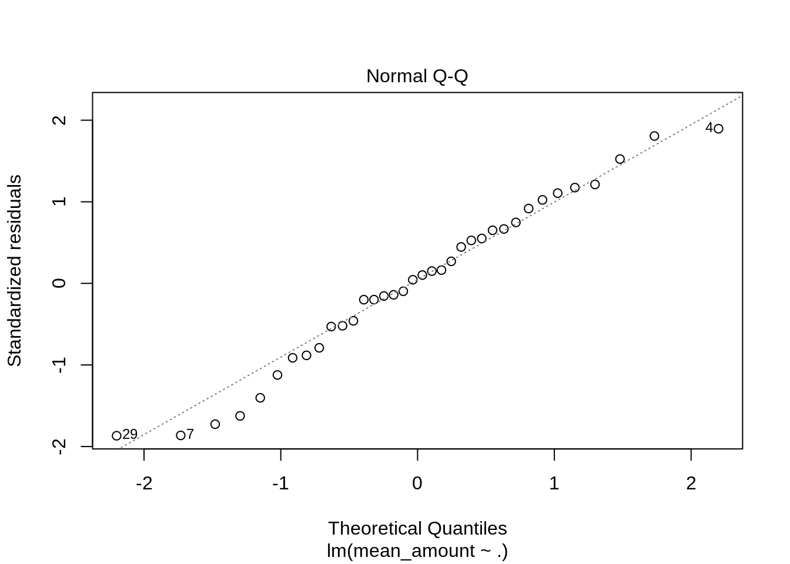

6 Modelling
# import prepped data
load(file = "./core_data/transactions_prepd.Rdata")
transactions_prepd <- transactions_prepd %>%
select(-sdtrans)6.1 Test Setup
pi1l1 <- transactions_prepd %>%
filter(industry == 1, location == 1) %>%
select(-industry, -location, -trdate) %>% #removing trdate and switching to ndate for ease of calculation
arrange(ndate) %>%
select(ndate, everything())
trainrows <- ceiling(0.75*nrow(pi1l1))
train_i1l1 <- pi1l1[1:trainrows,]
test_i1l1 <- pi1l1[(trainrows+1):nrow(pi1l1),]6.2 Initial Model
##
## Call:
## lm(formula = mean_amount ~ ., data = train_i1l1)
##
## Residuals:
## Min 1Q Median 3Q Max
## -4848.4 -1493.8 198.9 1899.1 5118.7
##
## Coefficients: (1 not defined because of singularities)
## Estimate Std. Error t value Pr(>|t|)
## (Intercept) -7.343e+05 2.834e+05 -2.591 0.020459 *
## ndate 1.110e+02 5.288e+01 2.099 0.053111 .
## ntrans -3.719e+02 3.852e+02 -0.965 0.349673
## Jan 2.215e+01 4.046e+03 0.005 0.995704
## Feb 2.145e+04 4.502e+03 4.765 0.000251 ***
## Mar 1.976e+04 4.865e+03 4.061 0.001025 **
## Apr 9.349e+03 3.839e+03 2.435 0.027845 *
## May 1.731e+04 4.228e+03 4.094 0.000958 ***
## Jun 4.862e+03 4.541e+03 1.071 0.301279
## Jul 1.779e+04 3.714e+03 4.791 0.000238 ***
## Aug 1.354e+04 4.097e+03 3.305 0.004809 **
## Sep 5.375e+03 4.205e+03 1.278 0.220561
## Oct 2.398e+04 4.020e+03 5.966 2.59e-05 ***
## Nov 1.428e+04 3.899e+03 3.662 0.002310 **
## Dec NA NA NA NA
## allords_price -6.994e+01 4.079e+01 -1.715 0.106948
## allords_volume 1.443e-06 1.021e-06 1.413 0.177994
## allords_change_perc -5.944e+04 3.880e+04 -1.532 0.146411
## smallords_price 1.903e+01 2.563e+01 0.742 0.469341
## asx20_price 7.543e+01 4.564e+01 1.652 0.119217
## asx20_volume -2.657e-06 6.040e-06 -0.440 0.666245
## trindex_predict -7.799e+03 5.913e+03 -1.319 0.206972
## ---
## Signif. codes: 0 '***' 0.001 '**' 0.01 '*' 0.05 '.' 0.1 ' ' 1
##
## Residual standard error: 3959 on 15 degrees of freedom
## Multiple R-squared: 0.9452, Adjusted R-squared: 0.8722
## F-statistic: 12.94 on 20 and 15 DF, p-value: 3.733e-06
## Warning in predict.lm(lm_train_i1l1, train_i1l1): prediction from a rank-
## deficient fit may be misleading# highlights an unnoticed corrolation between transactions and date
load(file = "./core_data/transactions_clean.Rdata")
t11 <- transactions %>%
filter(industry == 1, location == 1)
as.data.frame(table(t11$trdate))## Var1 Freq
## 1 2013-01-01 66
## 2 2013-02-01 70
## 3 2013-03-01 72
## 4 2013-04-01 71
## 5 2013-05-01 72
## 6 2013-06-01 73
## 7 2013-07-01 79
## 8 2013-08-01 74
## 9 2013-09-01 75
## 10 2013-10-01 77
## 11 2013-11-01 77
## 12 2013-12-01 76
## 13 2014-01-01 77
## 14 2014-02-01 80
## 15 2014-03-01 76
## 16 2014-04-01 79
## 17 2014-05-01 78
## 18 2014-06-01 77
## 19 2014-07-01 86
## 20 2014-08-01 95
## 21 2014-09-01 90
## 22 2014-10-01 98
## 23 2014-11-01 100
## 24 2014-12-01 99
## 25 2015-01-01 104
## 26 2015-02-01 110
## 27 2015-03-01 111
## 28 2015-04-01 110
## 29 2015-05-01 116
## 30 2015-06-01 116
## 31 2015-07-01 116
## 32 2015-08-01 118
## 33 2015-09-01 120
## 34 2015-10-01 116
## 35 2015-11-01 115
## 36 2015-12-01 112
## 37 2016-01-01 112
## 38 2016-02-01 113
## 39 2016-03-01 112
## 40 2016-04-01 112
## 41 2016-05-01 115
## 42 2016-06-01 121
## 43 2016-07-01 126
## 44 2016-08-01 124
## 45 2016-09-01 127
## 46 2016-10-01 126
## 47 2016-11-01 132# this verifies the correlation, this shows as the company has grown and the number of customers has increased,
# so has the mean spend per customer, or newer customers are spending more
# reducing variables with high correllation & irrelevant months
# ntrans - ndate,
train_i1l1 <- train_i1l1 %>%
select(-trindex_predict, -asx20_price, -Jun, -Sep)# compare between ndate and ntrans
lm_train_i1l1 <- lm(mean_amount ~. -ndate, data = train_i1l1)
summary(lm_train_i1l1)##
## Call:
## lm(formula = mean_amount ~ . - ndate, data = train_i1l1)
##
## Residuals:
## Min 1Q Median 3Q Max
## -7443.4 -2551.8 148.2 3296.3 6315.6
##
## Coefficients:
## Estimate Std. Error t value Pr(>|t|)
## (Intercept) 1.736e+05 5.070e+04 3.424 0.002846 **
## ntrans 4.541e+02 1.081e+02 4.202 0.000483 ***
## Jan -1.119e+04 4.990e+03 -2.242 0.037071 *
## Feb 1.153e+04 4.771e+03 2.418 0.025842 *
## Mar 1.130e+04 4.385e+03 2.576 0.018503 *
## Apr -3.450e+02 4.386e+03 -0.079 0.938135
## May 9.114e+03 3.741e+03 2.436 0.024850 *
## Jul 8.579e+03 4.677e+03 1.834 0.082341 .
## Aug 6.348e+03 3.673e+03 1.728 0.100171
## Oct 1.486e+04 4.479e+03 3.318 0.003612 **
## Nov 5.054e+03 4.195e+03 1.205 0.243090
## Dec -4.862e+03 4.220e+03 -1.152 0.263500
## allords_price -5.691e+00 5.559e+00 -1.024 0.318745
## allords_volume 1.627e-06 9.402e-07 1.730 0.099762 .
## allords_change_perc -4.714e+04 4.416e+04 -1.068 0.299118
## smallords_price -1.482e+01 1.467e+01 -1.010 0.325000
## asx20_volume -9.352e-06 4.795e-06 -1.951 0.066024 .
## ---
## Signif. codes: 0 '***' 0.001 '**' 0.01 '*' 0.05 '.' 0.1 ' ' 1
##
## Residual standard error: 4880 on 19 degrees of freedom
## Multiple R-squared: 0.8946, Adjusted R-squared: 0.8059
## F-statistic: 10.08 on 16 and 19 DF, p-value: 3.875e-06lm_train_i1l1_predict <- data.frame(mean_amount_pred = predict(lm_train_i1l1, train_i1l1), ndate = train_i1l1$ndate)
baseplot_train_i1l1 + geom_line(color ="red", data = lm_train_i1l1_predict, aes(y = mean_amount_pred))#AR^2 0.8059
lm_train_i1l1_high <- lm(mean_amount ~. -ntrans, data = train_i1l1)
summary(lm_train_i1l1_high)##
## Call:
## lm(formula = mean_amount ~ . - ntrans, data = train_i1l1)
##
## Residuals:
## Min 1Q Median 3Q Max
## -6398.0 -1591.3 -423.4 2054.8 5275.9
##
## Coefficients:
## Estimate Std. Error t value Pr(>|t|)
## (Intercept) -2.275e+05 8.016e+04 -2.838 0.010511 *
## ndate 2.637e+01 4.360e+00 6.049 8.1e-06 ***
## Jan -7.212e+03 3.942e+03 -1.830 0.083045 .
## Feb 1.294e+04 3.885e+03 3.330 0.003516 **
## Mar 1.289e+04 3.529e+03 3.654 0.001689 **
## Apr 3.341e+03 3.547e+03 0.942 0.358041
## May 1.043e+04 3.031e+03 3.442 0.002734 **
## Jul 1.136e+04 3.768e+03 3.016 0.007099 **
## Aug 7.556e+03 2.953e+03 2.559 0.019208 *
## Oct 1.587e+04 3.603e+03 4.406 0.000304 ***
## Nov 7.335e+03 3.254e+03 2.254 0.036167 *
## Dec -5.159e+03 3.421e+03 -1.508 0.147994
## allords_price -7.721e+00 4.460e+00 -1.731 0.099613 .
## allords_volume 1.689e-06 7.538e-07 2.241 0.037174 *
## allords_change_perc -4.289e+04 3.584e+04 -1.197 0.246118
## smallords_price -1.039e+01 1.181e+01 -0.880 0.389959
## asx20_volume -4.224e-06 3.020e-06 -1.399 0.178006
## ---
## Signif. codes: 0 '***' 0.001 '**' 0.01 '*' 0.05 '.' 0.1 ' ' 1
##
## Residual standard error: 3962 on 19 degrees of freedom
## Multiple R-squared: 0.9305, Adjusted R-squared: 0.872
## F-statistic: 15.9 on 16 and 19 DF, p-value: 9.484e-08lm_train_i1l1_predict <- data.frame(mean_amount_pred = predict(lm_train_i1l1_high, train_i1l1), ndate = train_i1l1$ndate)
baseplot_train_i1l1 + geom_line(color ="red", data = lm_train_i1l1_predict, aes(y = mean_amount_pred))#AR^2 0.872
# removing ntrans
train_i1l1 <- train_i1l1 %>%
select(-ntrans)
# checking corroloation once again
cor_train_i1l1 <- cor(train_i1l1)
corrplot(cor_train_i1l1, method = "number")# test between as20_volume and allords_volume
lm_train_i1l1 <- lm(mean_amount ~. -asx20_volume, data = train_i1l1)
summary(lm_train_i1l1)##
## Call:
## lm(formula = mean_amount ~ . - asx20_volume, data = train_i1l1)
##
## Residuals:
## Min 1Q Median 3Q Max
## -8016 -1486 -206 1578 5984
##
## Coefficients:
## Estimate Std. Error t value Pr(>|t|)
## (Intercept) -1.755e+05 7.271e+04 -2.414 0.025470 *
## ndate 2.290e+01 3.671e+00 6.239 4.3e-06 ***
## Jan -6.266e+03 3.975e+03 -1.576 0.130648
## Feb 1.205e+04 3.923e+03 3.071 0.006033 **
## Mar 1.355e+04 3.579e+03 3.786 0.001159 **
## Apr 3.996e+03 3.599e+03 1.110 0.279999
## May 1.074e+04 3.094e+03 3.472 0.002404 **
## Jul 1.149e+04 3.856e+03 2.979 0.007419 **
## Aug 7.643e+03 3.022e+03 2.529 0.019963 *
## Oct 1.600e+04 3.687e+03 4.340 0.000318 ***
## Nov 8.716e+03 3.174e+03 2.747 0.012440 *
## Dec -4.567e+03 3.475e+03 -1.314 0.203646
## allords_price -6.042e+00 4.397e+00 -1.374 0.184572
## allords_volume 1.280e-06 7.112e-07 1.800 0.086938 .
## allords_change_perc -3.540e+04 3.627e+04 -0.976 0.340828
## smallords_price -1.427e+01 1.176e+01 -1.213 0.239085
## ---
## Signif. codes: 0 '***' 0.001 '**' 0.01 '*' 0.05 '.' 0.1 ' ' 1
##
## Residual standard error: 4056 on 20 degrees of freedom
## Multiple R-squared: 0.9234, Adjusted R-squared: 0.8659
## F-statistic: 16.06 on 15 and 20 DF, p-value: 5.52e-08
lm_train_i1l1_predict <- data.frame(mean_amount_pred = predict(lm_train_i1l1, train_i1l1), ndate = train_i1l1$ndate)
baseplot_train_i1l1 + geom_line(color ="red", data = lm_train_i1l1_predict, aes(y = mean_amount_pred))
#0.8659
lm_train_i1l1 <- lm(mean_amount ~. -allords_volume, data = train_i1l1)
summary(lm_train_i1l1)##
## Call:
## lm(formula = mean_amount ~ . - allords_volume, data = train_i1l1)
##
## Residuals:
## Min 1Q Median 3Q Max
## -7330.6 -1691.6 -253.5 2189.1 6051.3
##
## Coefficients:
## Estimate Std. Error t value Pr(>|t|)
## (Intercept) -1.114e+05 6.703e+04 -1.662 0.11213
## ndate 2.324e+01 4.526e+00 5.135 5.04e-05 ***
## Jan -1.129e+04 3.833e+03 -2.945 0.00801 **
## Feb 1.337e+04 4.253e+03 3.143 0.00513 **
## Mar 1.662e+04 3.410e+03 4.876 9.15e-05 ***
## Apr 6.890e+02 3.664e+03 0.188 0.85275
## May 1.181e+04 3.253e+03 3.629 0.00167 **
## Jul 9.808e+03 4.058e+03 2.417 0.02534 *
## Aug 8.767e+03 3.182e+03 2.755 0.01221 *
## Oct 1.504e+04 3.927e+03 3.829 0.00105 **
## Nov 5.575e+03 3.460e+03 1.611 0.12285
## Dec -7.226e+03 3.610e+03 -2.002 0.05906 .
## allords_price -1.034e+01 4.717e+00 -2.191 0.04045 *
## allords_change_perc -1.667e+04 3.712e+04 -0.449 0.65831
## smallords_price -2.316e+01 1.134e+01 -2.042 0.05457 .
## asx20_volume -1.600e-06 3.051e-06 -0.524 0.60573
## ---
## Signif. codes: 0 '***' 0.001 '**' 0.01 '*' 0.05 '.' 0.1 ' ' 1
##
## Residual standard error: 4343 on 20 degrees of freedom
## Multiple R-squared: 0.9121, Adjusted R-squared: 0.8463
## F-statistic: 13.84 on 15 and 20 DF, p-value: 2.013e-07lm_train_i1l1_predict <- data.frame(mean_amount_pred = predict(lm_train_i1l1, train_i1l1), ndate = train_i1l1$ndate)
baseplot_train_i1l1 + geom_line(color ="red", data = lm_train_i1l1_predict, aes(y = mean_amount_pred))#0.8463
train_i1l1 <- train_i1l1 %>%
select(-asx20_volume)
lm_train_i1l1 <- lm(mean_amount ~., data = train_i1l1)
summary(lm_train_i1l1)##
## Call:
## lm(formula = mean_amount ~ ., data = train_i1l1)
##
## Residuals:
## Min 1Q Median 3Q Max
## -8016 -1486 -206 1578 5984
##
## Coefficients:
## Estimate Std. Error t value Pr(>|t|)
## (Intercept) -1.755e+05 7.271e+04 -2.414 0.025470 *
## ndate 2.290e+01 3.671e+00 6.239 4.3e-06 ***
## Jan -6.266e+03 3.975e+03 -1.576 0.130648
## Feb 1.205e+04 3.923e+03 3.071 0.006033 **
## Mar 1.355e+04 3.579e+03 3.786 0.001159 **
## Apr 3.996e+03 3.599e+03 1.110 0.279999
## May 1.074e+04 3.094e+03 3.472 0.002404 **
## Jul 1.149e+04 3.856e+03 2.979 0.007419 **
## Aug 7.643e+03 3.022e+03 2.529 0.019963 *
## Oct 1.600e+04 3.687e+03 4.340 0.000318 ***
## Nov 8.716e+03 3.174e+03 2.747 0.012440 *
## Dec -4.567e+03 3.475e+03 -1.314 0.203646
## allords_price -6.042e+00 4.397e+00 -1.374 0.184572
## allords_volume 1.280e-06 7.112e-07 1.800 0.086938 .
## allords_change_perc -3.540e+04 3.627e+04 -0.976 0.340828
## smallords_price -1.427e+01 1.176e+01 -1.213 0.239085
## ---
## Signif. codes: 0 '***' 0.001 '**' 0.01 '*' 0.05 '.' 0.1 ' ' 1
##
## Residual standard error: 4056 on 20 degrees of freedom
## Multiple R-squared: 0.9234, Adjusted R-squared: 0.8659
## F-statistic: 16.06 on 15 and 20 DF, p-value: 5.52e-08lm_train_i1l1_predict <- data.frame(mean_amount_pred = predict(lm_train_i1l1, train_i1l1), ndate = train_i1l1$ndate)
baseplot_train_i1l1 + geom_line(color ="red", data = lm_train_i1l1_predict, aes(y = mean_amount_pred))# the adjusted r-squared is decreasing as variables that correlated with ndate are removed, ndate could be related as a polynomial
train_i1l1 <- train_i1l1 %>%
select(-allords_change_perc, -smallords_price)
lm_train_i1l1 <- lm(mean_amount ~., data = train_i1l1)
summary(lm_train_i1l1)##
## Call:
## lm(formula = mean_amount ~ ., data = train_i1l1)
##
## Residuals:
## Min 1Q Median 3Q Max
## -9830.9 -2048.1 412.5 2021.8 6260.8
##
## Coefficients:
## Estimate Std. Error t value Pr(>|t|)
## (Intercept) -2.583e+05 4.583e+04 -5.637 1.14e-05 ***
## ndate 2.682e+01 3.139e+00 8.542 1.95e-08 ***
## Jan -7.968e+03 3.714e+03 -2.145 0.04321 *
## Feb 7.760e+03 3.361e+03 2.309 0.03072 *
## Mar 1.181e+04 3.425e+03 3.447 0.00230 **
## Apr 2.830e+03 3.514e+03 0.805 0.42934
## May 9.750e+03 3.142e+03 3.103 0.00519 **
## Jul 8.627e+03 3.159e+03 2.731 0.01219 *
## Aug 6.505e+03 3.039e+03 2.141 0.04362 *
## Oct 1.271e+04 3.064e+03 4.149 0.00042 ***
## Nov 8.527e+03 3.263e+03 2.613 0.01587 *
## Dec -6.692e+03 3.182e+03 -2.103 0.04712 *
## allords_price -8.681e+00 4.344e+00 -1.998 0.05818 .
## allords_volume 1.506e-06 6.598e-07 2.282 0.03251 *
## ---
## Signif. codes: 0 '***' 0.001 '**' 0.01 '*' 0.05 '.' 0.1 ' ' 1
##
## Residual standard error: 4231 on 22 degrees of freedom
## Multiple R-squared: 0.9083, Adjusted R-squared: 0.854
## F-statistic: 16.75 on 13 and 22 DF, p-value: 1.782e-08lm_train_i1l1_predict <- data.frame(mean_amount_pred = predict(lm_train_i1l1, train_i1l1), ndate = train_i1l1$ndate)
baseplot_train_i1l1 + geom_line(color ="red", data = lm_train_i1l1_predict, aes(y = mean_amount_pred))# 0.854
train_i1l1 <- train_i1l1 %>%
select(-Apr)
lm_train_i1l1 <- lm(mean_amount ~., data = train_i1l1)
summary(lm_train_i1l1)##
## Call:
## lm(formula = mean_amount ~ ., data = train_i1l1)
##
## Residuals:
## Min 1Q Median 3Q Max
## -10060.5 -2060.6 377.3 2434.5 5783.6
##
## Coefficients:
## Estimate Std. Error t value Pr(>|t|)
## (Intercept) -2.451e+05 4.247e+04 -5.772 7.03e-06 ***
## ndate 2.614e+01 3.001e+00 8.711 9.66e-09 ***
## Jan -9.456e+03 3.197e+03 -2.957 0.007059 **
## Feb 6.789e+03 3.113e+03 2.181 0.039667 *
## Mar 1.115e+04 3.301e+03 3.377 0.002597 **
## May 8.906e+03 2.940e+03 3.029 0.005963 **
## Jul 7.581e+03 2.857e+03 2.654 0.014190 *
## Aug 5.779e+03 2.879e+03 2.007 0.056636 .
## Oct 1.183e+04 2.839e+03 4.166 0.000372 ***
## Nov 7.447e+03 2.952e+03 2.523 0.019009 *
## Dec -7.752e+03 2.875e+03 -2.696 0.012883 *
## allords_price -8.241e+00 4.276e+00 -1.927 0.066410 .
## allords_volume 1.306e-06 6.064e-07 2.153 0.042062 *
## ---
## Signif. codes: 0 '***' 0.001 '**' 0.01 '*' 0.05 '.' 0.1 ' ' 1
##
## Residual standard error: 4199 on 23 degrees of freedom
## Multiple R-squared: 0.9056, Adjusted R-squared: 0.8563
## F-statistic: 18.38 on 12 and 23 DF, p-value: 5.428e-09lm_train_i1l1_predict <- data.frame(mean_amount_pred = predict(lm_train_i1l1, train_i1l1), ndate = train_i1l1$ndate)
baseplot_train_i1l1 + geom_line(color ="red", data = lm_train_i1l1_predict, aes(y = mean_amount_pred))##
## Call:
## lm(formula = mean_amount ~ . + sin(2 * pi * ndate), data = train_i1l1)
##
## Residuals:
## Min 1Q Median 3Q Max
## -10134.2 -2092.0 339.9 2384.7 5845.0
##
## Coefficients:
## Estimate Std. Error t value Pr(>|t|)
## (Intercept) -2.412e+05 4.491e+04 -5.370 2.16e-05 ***
## ndate 2.589e+01 3.150e+00 8.219 3.76e-08 ***
## Jan -9.865e+03 3.483e+03 -2.832 0.009693 **
## Feb 6.106e+03 3.775e+03 1.618 0.120004
## Mar 1.079e+04 3.536e+03 3.050 0.005870 **
## May 8.611e+03 3.125e+03 2.755 0.011551 *
## Jul 7.357e+03 2.989e+03 2.462 0.022148 *
## Aug 5.727e+03 2.941e+03 1.947 0.064355 .
## Oct 1.184e+04 2.896e+03 4.090 0.000485 ***
## Nov 7.264e+03 3.060e+03 2.373 0.026779 *
## Dec -7.672e+03 2.942e+03 -2.608 0.016063 *
## allords_price -8.327e+00 4.369e+00 -1.906 0.069808 .
## allords_volume 1.330e-06 6.228e-07 2.136 0.044099 *
## sin(2 * pi * ndate) -8.928e+13 2.669e+14 -0.334 0.741208
## ---
## Signif. codes: 0 '***' 0.001 '**' 0.01 '*' 0.05 '.' 0.1 ' ' 1
##
## Residual standard error: 4282 on 22 degrees of freedom
## Multiple R-squared: 0.906, Adjusted R-squared: 0.8505
## F-statistic: 16.32 on 13 and 22 DF, p-value: 2.292e-08
lm_train_i1l1_predict <- data.frame(mean_amount_pred = predict(lm_train_i1l1, train_i1l1), ndate = train_i1l1$ndate)
baseplot_train_i1l1 + geom_line(color ="red", data = lm_train_i1l1_predict, aes(y = mean_amount_pred))lm_train_i1l1 <- lm(mean_amount ~. + allords_volume*ndate*Dec, data = train_i1l1)
summary(lm_train_i1l1)##
## Call:
## lm(formula = mean_amount ~ . + allords_volume * ndate * Dec,
## data = train_i1l1)
##
## Residuals:
## Min 1Q Median 3Q Max
## -9879.9 -1327.5 473.9 2186.7 6231.0
##
## Coefficients: (1 not defined because of singularities)
## Estimate Std. Error t value Pr(>|t|)
## (Intercept) -5.160e+05 4.913e+05 -1.050 0.306121
## ndate 4.321e+01 3.050e+01 1.417 0.171877
## Jan -9.290e+03 3.416e+03 -2.720 0.013193 *
## Feb 7.236e+03 3.309e+03 2.187 0.040797 *
## Mar 1.165e+04 3.508e+03 3.320 0.003420 **
## May 8.644e+03 3.181e+03 2.717 0.013263 *
## Jul 7.445e+03 3.027e+03 2.460 0.023145 *
## Aug 5.905e+03 3.028e+03 1.950 0.065357 .
## Oct 1.184e+04 2.982e+03 3.972 0.000751 ***
## Nov 7.258e+03 3.107e+03 2.336 0.030038 *
## Dec 8.704e+04 1.594e+05 0.546 0.591142
## allords_price -9.023e+00 4.599e+00 -1.962 0.063807 .
## allords_volume 1.597e-05 2.697e-05 0.592 0.560402
## ndate:allords_volume -9.114e-10 1.668e-09 -0.546 0.590820
## Dec:allords_volume 2.802e-06 4.041e-06 0.694 0.495918
## ndate:Dec -8.643e+00 1.126e+01 -0.768 0.451687
## ndate:Dec:allords_volume NA NA NA NA
## ---
## Signif. codes: 0 '***' 0.001 '**' 0.01 '*' 0.05 '.' 0.1 ' ' 1
##
## Residual standard error: 4408 on 20 degrees of freedom
## Multiple R-squared: 0.9095, Adjusted R-squared: 0.8416
## F-statistic: 13.4 on 15 and 20 DF, p-value: 2.669e-07## Warning: not plotting observations with leverage one:
## 12, 24, 36## Warning: not plotting observations with leverage one:
## 12, 24, 36
## Warning in predict.lm(lm_train_i1l1, train_i1l1): prediction from a rank-
## deficient fit may be misleading
train_i1l1 <- train_i1l1 %>%
select(-Aug, -allords_price)
lm_train_i1l1 <- lm(mean_amount ~., data = train_i1l1)
summary(lm_train_i1l1)##
## Call:
## lm(formula = mean_amount ~ ., data = train_i1l1)
##
## Residuals:
## Min 1Q Median 3Q Max
## -10850.8 -1751.8 -71.1 1739.0 7622.6
##
## Coefficients:
## Estimate Std. Error t value Pr(>|t|)
## (Intercept) -2.531e+05 4.610e+04 -5.490 1.06e-05 ***
## ndate 2.310e+01 2.632e+00 8.775 4.18e-09 ***
## Jan -8.622e+03 3.332e+03 -2.588 0.015865 *
## Feb 3.020e+03 2.984e+03 1.012 0.321186
## Mar 6.862e+03 3.098e+03 2.215 0.036089 *
## May 6.041e+03 2.974e+03 2.031 0.052989 .
## Jul 5.331e+03 2.968e+03 1.796 0.084527 .
## Oct 9.858e+03 2.968e+03 3.321 0.002757 **
## Nov 7.776e+03 3.050e+03 2.549 0.017307 *
## Dec -8.189e+03 3.036e+03 -2.697 0.012336 *
## allords_volume 2.148e-06 5.266e-07 4.079 0.000405 ***
## ---
## Signif. codes: 0 '***' 0.001 '**' 0.01 '*' 0.05 '.' 0.1 ' ' 1
##
## Residual standard error: 4581 on 25 degrees of freedom
## Multiple R-squared: 0.8778, Adjusted R-squared: 0.8289
## F-statistic: 17.95 on 10 and 25 DF, p-value: 5.018e-09lm_train_i1l1_predict <- data.frame(mean_amount_pred = predict(lm_train_i1l1, train_i1l1), ndate = train_i1l1$ndate)
baseplot_train_i1l1 + geom_line(color ="red", data = lm_train_i1l1_predict, aes(y = mean_amount_pred))# 0.8289,
train_i1l1 <- train_i1l1 %>%
select(-Feb)
lm_train_i1l1 <- lm(mean_amount ~., data = train_i1l1)
summary(lm_train_i1l1)##
## Call:
## lm(formula = mean_amount ~ ., data = train_i1l1)
##
## Residuals:
## Min 1Q Median 3Q Max
## -10706.7 -1791.3 82.8 2242.9 7118.8
##
## Coefficients:
## Estimate Std. Error t value Pr(>|t|)
## (Intercept) -2.484e+05 4.589e+04 -5.414 1.13e-05 ***
## ndate 2.282e+01 2.619e+00 8.713 3.44e-09 ***
## Jan -9.193e+03 3.285e+03 -2.798 0.009547 **
## Mar 6.187e+03 3.027e+03 2.044 0.051183 .
## May 5.416e+03 2.911e+03 1.861 0.074119 .
## Jul 4.753e+03 2.914e+03 1.631 0.114872
## Oct 9.294e+03 2.917e+03 3.186 0.003726 **
## Nov 7.258e+03 3.008e+03 2.413 0.023186 *
## Dec -8.703e+03 2.995e+03 -2.906 0.007380 **
## allords_volume 2.175e-06 5.262e-07 4.134 0.000329 ***
## ---
## Signif. codes: 0 '***' 0.001 '**' 0.01 '*' 0.05 '.' 0.1 ' ' 1
##
## Residual standard error: 4584 on 26 degrees of freedom
## Multiple R-squared: 0.8728, Adjusted R-squared: 0.8287
## F-statistic: 19.82 on 9 and 26 DF, p-value: 1.745e-09
lm_train_i1l1_predict <- data.frame(mean_amount_pred = predict(lm_train_i1l1, train_i1l1), ndate = train_i1l1$ndate)
baseplot_train_i1l1 + geom_line(color ="red", data = lm_train_i1l1_predict, aes(y = mean_amount_pred))# 0.8287
train_i1l1 <- train_i1l1 %>%
select(-Jul)
lm_train_i1l1 <- lm(mean_amount ~., data = train_i1l1)
summary(lm_train_i1l1)##
## Call:
## lm(formula = mean_amount ~ ., data = train_i1l1)
##
## Residuals:
## Min 1Q Median 3Q Max
## -11051.5 -1682.9 193.3 2181.3 7929.8
##
## Coefficients:
## Estimate Std. Error t value Pr(>|t|)
## (Intercept) -2.465e+05 4.727e+04 -5.215 1.71e-05 ***
## ndate 2.284e+01 2.698e+00 8.464 4.46e-09 ***
## Jan -1.019e+04 3.325e+03 -3.066 0.00489 **
## Mar 5.546e+03 3.092e+03 1.794 0.08408 .
## May 4.674e+03 2.962e+03 1.578 0.12617
## Oct 8.494e+03 2.962e+03 2.867 0.00793 **
## Nov 6.345e+03 3.045e+03 2.083 0.04681 *
## Dec -9.602e+03 3.033e+03 -3.166 0.00381 **
## allords_volume 2.093e-06 5.396e-07 3.879 0.00061 ***
## ---
## Signif. codes: 0 '***' 0.001 '**' 0.01 '*' 0.05 '.' 0.1 ' ' 1
##
## Residual standard error: 4722 on 27 degrees of freedom
## Multiple R-squared: 0.8597, Adjusted R-squared: 0.8182
## F-statistic: 20.69 on 8 and 27 DF, p-value: 1.237e-09lm_train_i1l1_predict <- data.frame(mean_amount_pred = predict(lm_train_i1l1, train_i1l1), ndate = train_i1l1$ndate)
baseplot_train_i1l1 + geom_line(color ="red", data = lm_train_i1l1_predict, aes(y = mean_amount_pred))#0.8182
train_i1l1 <- train_i1l1 %>%
select(-May)
lm_train_i1l1 <- lm(mean_amount ~., data = train_i1l1)
summary(lm_train_i1l1)##
## Call:
## lm(formula = mean_amount ~ ., data = train_i1l1)
##
## Residuals:
## Min 1Q Median 3Q Max
## -11832.8 -1758.4 -308.5 1480.3 10954.5
##
## Coefficients:
## Estimate Std. Error t value Pr(>|t|)
## (Intercept) -2.475e+05 4.850e+04 -5.102 2.10e-05 ***
## ndate 2.284e+01 2.769e+00 8.249 5.62e-09 ***
## Jan -1.063e+04 3.401e+03 -3.125 0.004114 **
## Mar 4.727e+03 3.128e+03 1.511 0.141988
## Oct 7.839e+03 3.010e+03 2.604 0.014572 *
## Nov 5.811e+03 3.106e+03 1.871 0.071872 .
## Dec -1.015e+04 3.092e+03 -3.284 0.002751 **
## allords_volume 2.181e-06 5.508e-07 3.959 0.000469 ***
## ---
## Signif. codes: 0 '***' 0.001 '**' 0.01 '*' 0.05 '.' 0.1 ' ' 1
##
## Residual standard error: 4847 on 28 degrees of freedom
## Multiple R-squared: 0.8468, Adjusted R-squared: 0.8085
## F-statistic: 22.11 on 7 and 28 DF, p-value: 7.884e-10
lm_train_i1l1_predict <- data.frame(mean_amount_pred = predict(lm_train_i1l1, train_i1l1), ndate = train_i1l1$ndate)
baseplot_train_i1l1 + geom_line(color ="red", data = lm_train_i1l1_predict, aes(y = mean_amount_pred))#0.8085
train_i1l1 <- train_i1l1 %>%
select(-Mar)
lm_train_i1l1 <- lm(mean_amount ~., data = train_i1l1)
summary(lm_train_i1l1)##
## Call:
## lm(formula = mean_amount ~ ., data = train_i1l1)
##
## Residuals:
## Min 1Q Median 3Q Max
## -12675.8 -1882.2 -194.8 3226.3 10807.6
##
## Coefficients:
## Estimate Std. Error t value Pr(>|t|)
## (Intercept) -2.513e+05 4.950e+04 -5.077 2.05e-05 ***
## ndate 2.285e+01 2.830e+00 8.076 6.62e-09 ***
## Jan -1.054e+04 3.475e+03 -3.034 0.005053 **
## Oct 7.334e+03 3.057e+03 2.399 0.023086 *
## Nov 5.627e+03 3.172e+03 1.774 0.086553 .
## Dec -1.038e+04 3.156e+03 -3.289 0.002638 **
## allords_volume 2.416e-06 5.399e-07 4.475 0.000109 ***
## ---
## Signif. codes: 0 '***' 0.001 '**' 0.01 '*' 0.05 '.' 0.1 ' ' 1
##
## Residual standard error: 4953 on 29 degrees of freedom
## Multiple R-squared: 0.8343, Adjusted R-squared: 0.8
## F-statistic: 24.34 on 6 and 29 DF, p-value: 4.368e-10lm_train_i1l1_predict <- data.frame(mean_amount_pred = predict(lm_train_i1l1, train_i1l1), ndate = train_i1l1$ndate)
baseplot_train_i1l1 + geom_line(color ="red", data = lm_train_i1l1_predict, aes(y = mean_amount_pred))#0.8
train_i1l1 <- train_i1l1 %>%
select(-Nov)
lm_train_i1l1 <- lm(mean_amount ~., data = train_i1l1)
summary(lm_train_i1l1)##
## Call:
## lm(formula = mean_amount ~ ., data = train_i1l1)
##
## Residuals:
## Min 1Q Median 3Q Max
## -12894.5 -1933.7 -27.4 3141.3 9781.4
##
## Coefficients:
## Estimate Std. Error t value Pr(>|t|)
## (Intercept) -2.519e+05 5.124e+04 -4.916 2.95e-05 ***
## ndate 2.320e+01 2.922e+00 7.938 7.36e-09 ***
## Jan -1.177e+04 3.526e+03 -3.338 0.002265 **
## Oct 6.625e+03 3.137e+03 2.112 0.043159 *
## Dec -1.140e+04 3.212e+03 -3.549 0.001297 **
## allords_volume 2.172e-06 5.405e-07 4.019 0.000363 ***
## ---
## Signif. codes: 0 '***' 0.001 '**' 0.01 '*' 0.05 '.' 0.1 ' ' 1
##
## Residual standard error: 5127 on 30 degrees of freedom
## Multiple R-squared: 0.8163, Adjusted R-squared: 0.7857
## F-statistic: 26.67 on 5 and 30 DF, p-value: 3.389e-10lm_train_i1l1_predict <- data.frame(mean_amount_pred = predict(lm_train_i1l1, train_i1l1), ndate = train_i1l1$ndate)
baseplot_train_i1l1 + geom_line(color ="red", data = lm_train_i1l1_predict, aes(y = mean_amount_pred))#0.7857
lm_train_i1l1 <- lm(mean_amount ~. + I(ndate^2) + I(ndate^3) + I(ndate^5), data = train_i1l1)
summary(lm_train_i1l1)##
## Call:
## lm(formula = mean_amount ~ . + I(ndate^2) + I(ndate^3) + I(ndate^5),
## data = train_i1l1)
##
## Residuals:
## Min 1Q Median 3Q Max
## -12075.5 -2036.3 3.2 3322.7 9556.1
##
## Coefficients:
## Estimate Std. Error t value Pr(>|t|)
## (Intercept) 5.795e+09 8.107e+09 0.715 0.48087
## ndate -1.337e+06 1.873e+06 -0.714 0.48134
## Jan -1.250e+04 3.778e+03 -3.309 0.00266 **
## Oct 6.587e+03 3.300e+03 1.996 0.05606 .
## Dec -1.193e+04 3.561e+03 -3.349 0.00240 **
## allords_volume 2.232e-06 6.057e-07 3.684 0.00101 **
## I(ndate^2) 1.097e+02 1.538e+02 0.713 0.48180
## I(ndate^3) -3.374e-03 4.736e-03 -0.713 0.48226
## I(ndate^5) 1.277e-12 1.795e-12 0.711 0.48318
## ---
## Signif. codes: 0 '***' 0.001 '**' 0.01 '*' 0.05 '.' 0.1 ' ' 1
##
## Residual standard error: 5327 on 27 degrees of freedom
## Multiple R-squared: 0.8215, Adjusted R-squared: 0.7686
## F-statistic: 15.53 on 8 and 27 DF, p-value: 2.828e-08lm_train_i1l1_predict <- data.frame(mean_amount_pred = predict(lm_train_i1l1, train_i1l1), ndate = train_i1l1$ndate)
baseplot_train_i1l1 + geom_line(color ="red", data = lm_train_i1l1_predict, aes(y = mean_amount_pred))x = model.matrix(~., train_i1l1_ok[,-2])
y = train_i1l1_ok$mean_amount
cv.fit_ridge = cv.glmnet(x, y, family = 'gaussian', nfolds = 6, alpha = 1)
cv.fit_ridge$lambda.min## [1] 75.6825## 14 x 1 sparse Matrix of class "dgCMatrix"
## 1
## (Intercept) -1.450277e+05
## (Intercept) .
## ndate 1.740200e+01
## Jan -9.173277e+03
## Feb .
## Mar .
## May .
## Jul .
## Aug .
## Oct 2.799762e+03
## Nov .
## Dec -5.893588e+03
## allords_price .
## allords_volume 1.430776e-06ridge_predict <- data.frame(ndate = train_i1l1_ok$ndate)
ridge_predict$mean_amount_pred <- predict(cv.fit_ridge$glmnet.fit, newx = model.matrix(~., train_i1l1_ok[, -2]),
s = cv.fit_ridge$lambda.min)
baseplot_train_i1l1 + geom_line(color ="red", data = ridge_predict, aes(y = mean_amount_pred))#prediction_ridge = predict(cv.fit_ridge$glmnet.fit, newx = model.matrix(~ ., train_i1l1[, -2]),
# type = "class",
#s = cv.fit_ridge$lambda.min)
rmse(train_i1l1_ok$mean_amount, ridge_predict$mean_amount_pred)## [1] 3381.967## [1] 4613.697# over multiple tests lasso consistently 0's the Feb, Aug, allords_price variables with minimal impact to RMSE error comared to the "ok" model
train_i1l1_ok2 <- train_i1l1_ok %>%
select(-Feb, -Aug, -allords_price)##
## Call:
## lm(formula = mean_amount ~ ., data = train_i1l1_ok2)
##
## Residuals:
## Min 1Q Median 3Q Max
## -10706.7 -1791.3 82.8 2242.9 7118.8
##
## Coefficients:
## Estimate Std. Error t value Pr(>|t|)
## (Intercept) -2.484e+05 4.589e+04 -5.414 1.13e-05 ***
## ndate 2.282e+01 2.619e+00 8.713 3.44e-09 ***
## Jan -9.193e+03 3.285e+03 -2.798 0.009547 **
## Mar 6.187e+03 3.027e+03 2.044 0.051183 .
## May 5.416e+03 2.911e+03 1.861 0.074119 .
## Jul 4.753e+03 2.914e+03 1.631 0.114872
## Oct 9.294e+03 2.917e+03 3.186 0.003726 **
## Nov 7.258e+03 3.008e+03 2.413 0.023186 *
## Dec -8.703e+03 2.995e+03 -2.906 0.007380 **
## allords_volume 2.175e-06 5.262e-07 4.134 0.000329 ***
## ---
## Signif. codes: 0 '***' 0.001 '**' 0.01 '*' 0.05 '.' 0.1 ' ' 1
##
## Residual standard error: 4584 on 26 degrees of freedom
## Multiple R-squared: 0.8728, Adjusted R-squared: 0.8287
## F-statistic: 19.82 on 9 and 26 DF, p-value: 1.745e-09


lm_train_i1l1_predict_ok2 <- data.frame(mean_amount_pred = predict(lm_train_i1l1_ok2, train_i1l1_ok2), ndate = train_i1l1$ndate)
baseplot_train_i1l1 + geom_line(color ="red", data = lm_train_i1l1_predict_ok2, aes(y = mean_amount_pred))
x = model.matrix(~., train_i1l1_ok2[,-2])
y = train_i1l1_ok2$mean_amount
cv.fit_ridge_ok = cv.glmnet(x, y, family = 'gaussian', nfolds = 10, alpha = 1)
cv.fit_ridge_ok$lambda.min## [1] 191.8827## 11 x 1 sparse Matrix of class "dgCMatrix"
## 1
## (Intercept) -1.624748e+05
## (Intercept) .
## ndate 1.833026e+01
## Jan -9.439266e+03
## Mar 7.278698e+02
## May .
## Jul .
## Oct 3.636235e+03
## Nov 8.952965e+02
## Dec -6.636628e+03
## allords_volume 1.557927e-06ridge_predict_ok <- data.frame(ndate = train_i1l1_ok2$ndate)
ridge_predict_ok$mean_amount_pred <- predict(cv.fit_ridge_ok$glmnet.fit, newx = model.matrix(~., train_i1l1_ok2[, -2]),
s = cv.fit_ridge_ok$lambda.min)
baseplot_train_i1l1 + geom_line(color ="red", data = ridge_predict_ok, aes(y = mean_amount_pred))#prediction_ridge = predict(cv.fit_ridge$glmnet.fit, newx = model.matrix(~ ., train_i1l1[, -2]),
# type = "class",
#s = cv.fit_ridge$lambda.min)
rmse(train_i1l1_ok2$mean_amount, ridge_predict_ok$mean_amount_pred)## [1] 3939.644## [1] 3895.29# drop extra columns from test
test_i1l1_mod <- test_i1l1 %>%
select(ndate, mean_amount, Jan, Mar, May, Jul, Oct, Nov, Dec, allords_volume)
#testset test
lm_test_i1l1_pred <- data.frame(mean_amount_pred = predict(lm_train_i1l1_ok2, test_i1l1_mod), ndate = test_i1l1_mod$ndate)
ridge_predict_test <- data.frame(ndate = test_i1l1_mod$ndate)
ridge_predict_test$mean_amount_pred <- predict(cv.fit_ridge_ok$glmnet.fit, newx = model.matrix(~., test_i1l1_mod[, -2]),
s = cv.fit_ridge_ok$lambda.min)
# baseplot_train_i1l1 + geom_line(color ="red", data = ridge_predict, aes(y = mean_amount_pred))
rmse(test_i1l1_mod$mean_amount, ridge_predict_test$mean_amount_pred)## [1] 8960.708## [1] 8672.532ggplot(test_i1l1_mod, aes(x = ndate, y = mean_amount)) + geom_point() + geom_line() +
geom_line(color ="red", data = ridge_predict_test, aes(y = mean_amount_pred)) +
geom_line(color ="blue", data = lm_test_i1l1_pred, aes(y = mean_amount_pred))# check agains best model
# drop extra columns from test
test_i1l1_mod <- test_i1l1 %>%
select(-trindex_predict, -asx20_price, -Jun, -Sep)
#testset test
lm_test_i1l1_pred <- data.frame(mean_amount_pred = predict(lm_train_i1l1_high, test_i1l1_mod), ndate = test_i1l1_mod$ndate)
# baseplot_train_i1l1 + geom_line(color ="red", data = ridge_predict, aes(y = mean_amount_pred))
rmse(test_i1l1_mod$mean_amount, ridge_predict_test$mean_amount_pred)## [1] 8960.708## [1] 11334.36.3 All Ordinaries Volume
# As all ordinaries is a predictor the december value needs to be predicted, the increase in data availability will be leveraged here to create a more accurate model, volumes go back to july 2003
allords_full <- read_csv("./integrate_data/allords_0603.csv")## Parsed with column specification:
## cols(
## Date = col_date(format = ""),
## Price = col_number(),
## Open = col_number(),
## High = col_number(),
## Low = col_number(),
## Vol. = col_character(),
## `Change %` = col_character()
## )names(allords_full) <- c("date", "price","open","high","low","volume","change")
allords_full_date <- allords_full$date
allords_full[] <- lapply(allords_full, function(x) gsub("%", "e-2", x))
allords_full[] <- lapply(allords_full, function(x) gsub("B", "e9", x))
allords_full[] <- lapply(allords_full, function(x) as.numeric(x))## Warning in FUN(X[[i]], ...): NAs introduced by coercionallords_full$date <- as.numeric(allords_full_date)
cor_asx2 <- cor(allords_full)
corrplot(cor_asx2, method = "number")trainrows <- ceiling(0.85*nrow(allords_full))
train_aofull <- allords_full[1:trainrows,]
test_aofull <- allords_full[(trainrows+1):nrow(allords_full),]
str(train_aofull)## Classes 'tbl_df', 'tbl' and 'data.frame': 137 obs. of 7 variables:
## $ date : num 17106 17075 17045 17014 16983 ...
## $ price : num 5502 5402 5525 5529 5644 ...
## $ open : num 5402 5525 5529 5644 5310 ...
## $ high : num 5584 5579 5561 5692 5651 ...
## $ low : num 5139 5347 5294 5510 5238 ...
## $ volume: num 1.94e+10 1.57e+10 1.84e+10 1.78e+10 1.57e+10 ...
## $ change: num 0.0185 -0.0222 -0.0008 -0.0203 0.0628 -0.0252 0.0248 0.0319 0.0412 -0.0215 ...##
## Call:
## lm(formula = volume ~ ., data = train_aofull)
##
## Residuals:
## Min 1Q Median 3Q Max
## -8.644e+09 -3.300e+09 -7.010e+08 2.414e+09 1.940e+10
##
## Coefficients:
## Estimate Std. Error t value Pr(>|t|)
## (Intercept) 2.662e+10 6.448e+09 4.129 6.47e-05 ***
## date 3.529e+05 3.719e+05 0.949 0.3444
## price -1.386e+07 1.538e+07 -0.901 0.3690
## open 5.978e+06 1.571e+07 0.380 0.7042
## high 1.136e+07 6.104e+06 1.862 0.0649 .
## low -6.438e+06 3.801e+06 -1.694 0.0927 .
## change 5.490e+10 7.447e+10 0.737 0.4623
## ---
## Signif. codes: 0 '***' 0.001 '**' 0.01 '*' 0.05 '.' 0.1 ' ' 1
##
## Residual standard error: 5.138e+09 on 130 degrees of freedom
## Multiple R-squared: 0.1842, Adjusted R-squared: 0.1465
## F-statistic: 4.892 on 6 and 130 DF, p-value: 0.0001536x = model.matrix(~., train_aofull[,-5])
y = train_aofull$volume
cv.fit_ridge_ok = cv.glmnet(x, y, family = 'gaussian', nfolds = 10, alpha = 0.5)
cv.fit_ridge_ok$lambda.min## [1] 168455586## 8 x 1 sparse Matrix of class "dgCMatrix"
## 1
## (Intercept) 5.986809e+08
## (Intercept) .
## date .
## price .
## open .
## high .
## volume 9.700569e-01
## change .#ridge_predict_ok <- data.frame(ndate = $ndate)
## ridge_predict_ok$mean_amount_pred <- predict(cv.fit_ridge_ok$glmnet.fit, newx = model.matrix(~., train_i1l1_ok2[, -2]),
# s = cv.fit_ridge_ok$lambda.min)
# Dec 2016 - Volume 16.35B# predict december 2016
december_prediction <- train_i1l1_ok2[1,]
december_prediction$ndate <- as.numeric(as.Date("2016-12-01"))
december_prediction$Jan <- 0
december_prediction$Dec <- 1
december_prediction$allords_volume <- as.numeric(16.35e9)
december_prediction$mean_amount <- NA
dec_i1l1_pred <- data.frame(mean_amount_pred = predict(lm_train_i1l1_ok2, december_prediction), ndate = december_prediction$ndate)
dec_i1l1_pred$mean_amount## [1] 169433.5ggplot(test_i1l1_mod, aes(x = ndate, y = mean_amount)) + geom_point() + geom_line() +
geom_line(color ="red", data = ridge_predict_test, aes(y = mean_amount_pred)) +
geom_line(color ="blue", data = lm_test_i1l1_pred, aes(y = mean_amount_pred)) +
geom_point(color = "green", data = dec_i1l1_pred, aes(y= mean_amount_pred))6.4 Experiment
train_i1l1_do <- train_i1l1 %>%
mutate(ndatem = ndate*20.83)
#poly() did not impreove results either
lmdo_train_i1l1 <- lm(mean_amount ~ ndate + I(ndate^4), data = train_i1l1_do)
summary(lmdo_train_i1l1)##
## Call:
## lm(formula = mean_amount ~ ndate + I(ndate^4), data = train_i1l1_do)
##
## Residuals:
## Min 1Q Median 3Q Max
## -17061 -6873 1466 5854 16437
##
## Coefficients:
## Estimate Std. Error t value Pr(>|t|)
## (Intercept) 9.448e+05 2.234e+06 0.423 0.675
## ndate -7.128e+01 1.835e+02 -0.388 0.700
## I(ndate^4) 5.375e-12 1.071e-11 0.502 0.619
##
## Residual standard error: 9066 on 33 degrees of freedom
## Multiple R-squared: 0.3682, Adjusted R-squared: 0.3299
## F-statistic: 9.614 on 2 and 33 DF, p-value: 0.0005129